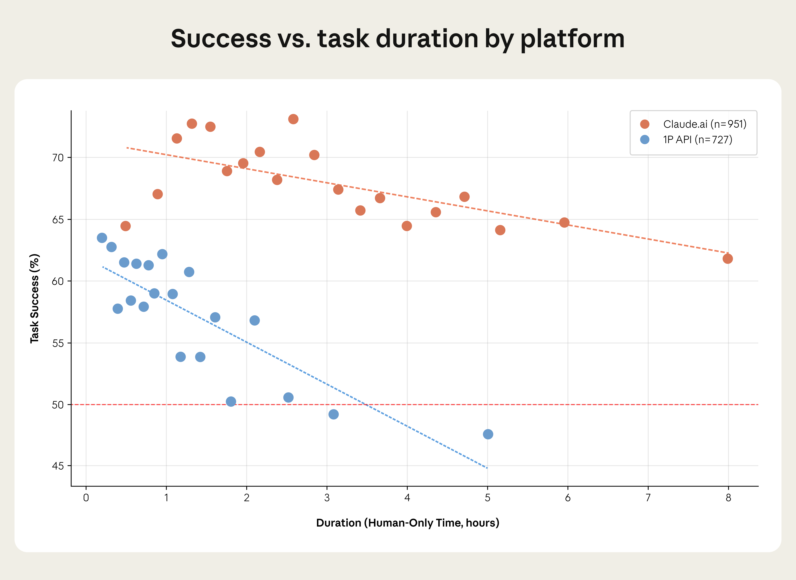

Anthropic 经济指数：理解 AI 使用的新基础模块
摘要
Anthropic 引入了"经济原语"（economic primitives）——五个追踪 Claude 经济影响的基础性测量指标：任务复杂度、技能水平、目的、AI 自主性和成功率。该分析基于 2025 年 11 月的 100 万次 Claude.ai 对话和 API 记录。
核心发现
任务性能
加速效益：复杂任务获得最大加速。大学水平任务（16 年教育）在 Claude.ai 上显示 12 倍加速，而高中任务为 9 倍。成功率方面：大学任务达到 66% 完成率，简单任务为 70%。

图：任务加速倍数与所需教育水平的关系，显示复杂任务获得更大加速
时间跨度：Claude 在约 3.5 小时的 API 任务和约 19 小时的 Claude.ai 任务上达到 50% 成功率，而 METR 的基准为 2 小时。

图：任务成功率随时间变化的曲线，显示 Claude 在不同时间跨度上的表现
全球使用模式
人均 GDP 较高的国家倾向于工作/个人使用；低收入国家更倾向于教育应用。这与微软的研究一致，显示发展中经济体的教育使用。

图：不同人均 GDP 水平国家的 Claude 使用模式分布
职业影响
覆盖率从 36%（2025 年 1 月）扩大到 49% 的工作。然而，有效影响差异显著——数据录入职位和放射科医生面临更大冲击，而教师或开发者尽管任务覆盖率相似，影响较小。

图：不同职业的有效 AI 覆盖率对比，显示实际影响的差异
技能降级风险：Claude 针对高技能任务（平均 14.4 年教育 vs 经济体的 13.2 年），可能降低技术写作、旅行代理和教育工作者的工作复杂度。

图：Claude 处理任务的平均教育要求与经济体整体水平对比
生产力估算
考虑任务可靠性后，初始的 1.8 个百分点生产力提升降至 1.2 点（Claude.ai）和 1.0 点（API）。仍然代表相对于 1990 年代末期的显著改进。
2025 年使用趋势
- 任务集中度：前 10 项任务占 Claude.ai 使用的 24%（从 21% 增加）
- 领域分布：计算机/数学任务占主导（~33% Claude.ai，~50% API）
- 使用模式：增强型使用（52%）现在超过自动化（45%）在 Claude.ai 上
- 地理分布：美国采用正在地理上分散；模型预测 2-5 年内实现均衡
关键洞察
1. 复杂任务受益更大
高技能任务获得更大的加速效益，但成功率略低于简单任务。
2. 时间跨度的重要性
Claude 在较长时间跨度的任务上表现更好，但仍有提升空间。
3. 全球使用差异
经济发展水平显著影响 AI 的使用模式和目的。
4. 职业影响不均
任务覆盖率不等于实际影响，需要考虑任务的关键性和可替代性。
5. 生产力增长现实
实际生产力提升低于理论值，但仍然显著。
方法论
分析基于：
- 数据规模：100 万次对话和 API 记录
- 时间范围：2025 年 11 月
- 测量维度：5 个经济原语 1. 任务复杂度 2. 技能水平 3. 使用目的 4. AI 自主性 5. 成功率
未来展望
- 覆盖率持续增长：预计从 49% 继续增长
- 地理均衡：美国内部采用差异将在 2-5 年内缩小
- 技能演变：工作任务的复杂度可能发生变化
元数据
- 原文链接：https://www.anthropic.com/research/economic-index-primitives
- 发布日期：2026 年 1 月 15 日
- 类型：Research / Economic Analysis